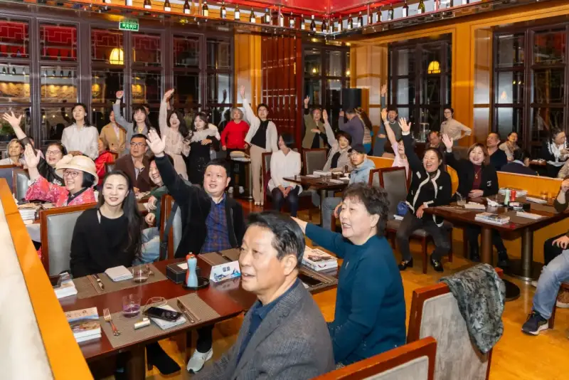
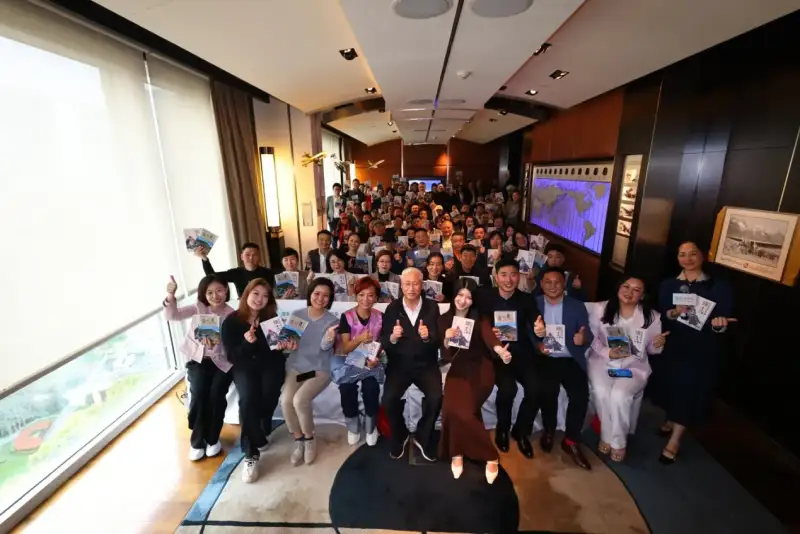
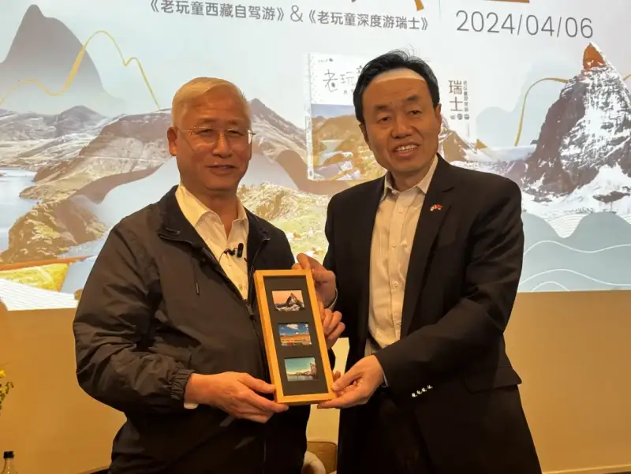
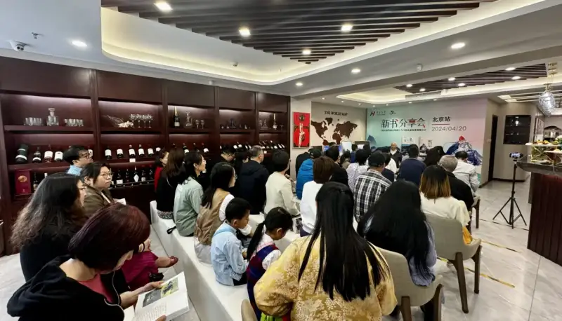
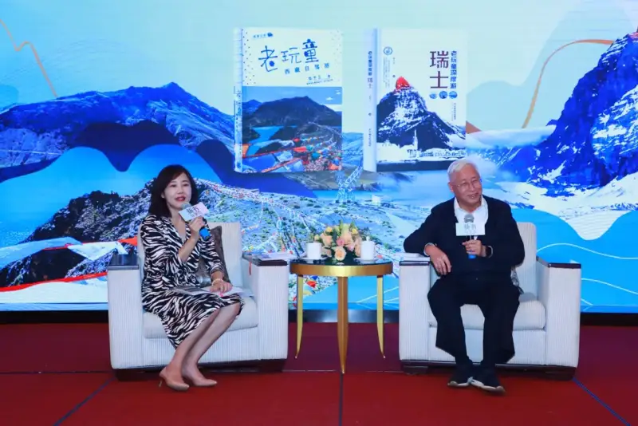
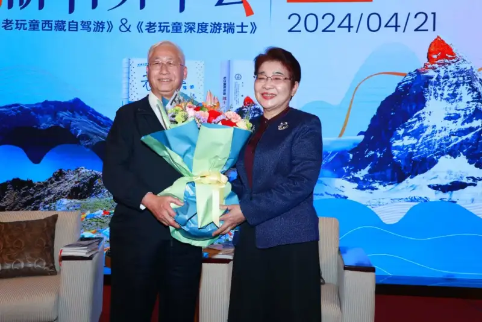
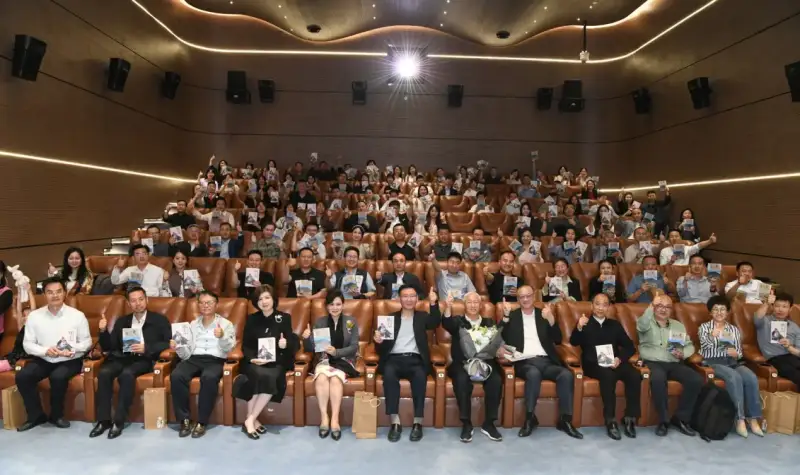
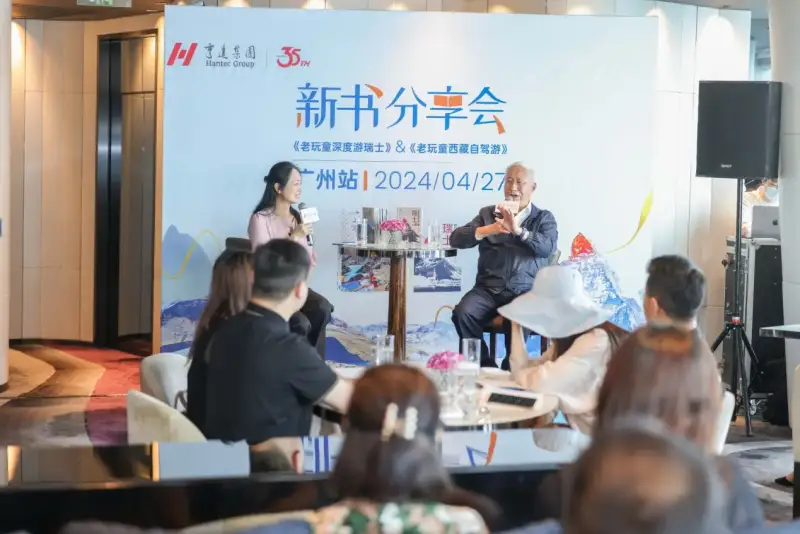

Published: 2024-05-09
Original link: https://www.cnphotos.net/academy/show-170.html
Hosted by Hantak Group, the book tour share sessions for Mr. Deng Yuli's newly published essay collections, 'The Old Playboy Explores Switzerland in Depth' and 'The Old Playboy Drives Across Tibet,' were held in turn in Hangzhou, Shanghai, Bern in Switzerland, Beijing, Xi'an, and Guangzhou. Mr. Deng Yuli, honorary advisor to Hantak Group, met readers from all cities again after three years. The tour covered 6 cities and 7 sessions, and drew more than a thousand readers. The mood was lively. For the Switzerland, Beijing, Xi'an, and Guangzhou stops, the event invited Ambassador Wang Shiting of China to Switzerland and embassy staff; former Ambassador Xu Jinghu to Switzerland, and leaders and representatives of the Beijing Committee of the Chinese People's Political Consultative Conference and the Overseas Friendship Association; leaders and representatives of the Xi'an Overseas Friendship Association; and representatives and staff of the Swiss Consulate General in Guangzhou.
Mr. Deng Yuli is a well-known entrepreneur and financier in Hong Kong. He is also a writer, photographer, and traveler. He is the founder and honorary chairman of the international finance firm Hantak Group. He has 50 years of experience in finance, and he founded Hantak Group in Hong Kong in 1990. Mr. Deng is active in public affairs and has held many public posts. These include advisor on Hong Kong, Macao, Taiwan, and overseas Chinese affairs for the Beijing Committee of the Chinese People's Political Consultative Conference, permanent honorary president of the Asia-Pacific Taiwan Business Association, and president of the Swiss Chinese Chamber of Commerce. Mr. Deng also pursues cultural and creative work at a high level. He has published 16 essay collections and 2 photo books, and he has held solo photo exhibitions in more than 20 cities across five continents.
Through lively words and fine photos, Mr. Deng showed readers the charming scenery of Switzerland and Tibet. Readers learned more about the local human culture. At the share sessions, he spoke at length about the 'shocks' and 'delights' he met while traveling. His humorous talks kept every guest fully engaged. Readers praised his books and his unique writing style, and they showed great interest.
Next, the book launch will continue in Sydney (Australia), Putian, Xiamen, Dalian, Chongqing, Yangzhong, and Yangzhou. It will meet readers in each city and share his travel notes and writing thoughts. Please stay tuned.
Stop 1: Hangzhou

The Hangzhou session was held at the Four Seasons Hotel West Lake. More than a hundred readers attended, and the mood was lively.
Stop 2: Shanghai

The Old Playboy and readers gathered at the Peninsula Shanghai. They met again after 3 years, and the scene was warm.
Stop 3: Bern, Switzerland

Ambassador to Switzerland Mr. Wang Shiting (right) attended the session and gave a speech at the event.
Stop 4: Beijing

One Beijing session was held at the Vennelya boutique gallery, a Hantak Group venue.

The second Beijing session was held at the Hotel New Otani Chang Fu Gong. It also invited the well-known Taiwanese commentator Ms. Yin Naijing (left) to host.

Former Chinese Ambassador to Switzerland Xu Jinghu (right) attended the Beijing share session.
Stop 5: Xi'an

Leaders and representatives of the Xi'an city government and the Overseas Friendship Association attended the Xi'an session. The scene was busy.
Stop 6: Guangzhou

More than a hundred readers gathered at the Four Seasons Hotel Guangzhou to travel through Switzerland and Tibet with Mr. Deng.